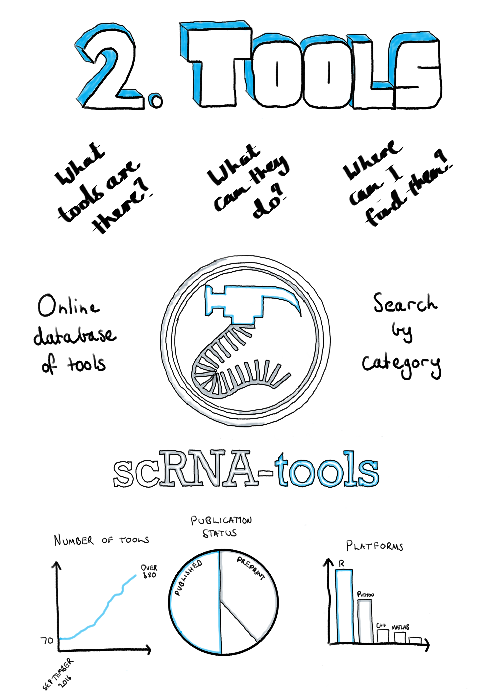

Chapter 2 The scRNA-seq tools landscape
Have you ever seen a sound
Have you listened to an image
Have you ever touched a thought
Have you ever tasted nothing
Have you ever told a lie
That was true more than truth
Because truth it had lied
All its life when it spoke to you?
— The Cat Empire
Miserere, 2005

2.1 Introduction
When I began my PhD in early 2016, single-cell RNA sequencing technologies were just beginning to become widely available. Since then there has been a rapid uptake of the technologies and there are now many studies using this approach. Along with the growth in the adoption of scRNA-seq technologies, there has been an explosion in the number of software tools for analysing these datasets. This chapter charts the growth in the scRNA-seq analysis landscape over time.
In 2016 there were relatively few analysis methods available and to answer questions like how many tools perform a particular task, which areas are developers focusing on or is there a tool for doing a particular task, I began to record details about them. Inspired by similar projects such as Sean Davis’s Awesome Single Cell page [197] I decided to make this collection public. This turned out to be useful to other researchers and over time a simple spreadsheet became the scRNA-tools database and website (https://scRNA-tools.org). Our paper published in PLoS Computational Biology describing this resource forms the main part of this chapter [198].
By having access to details about existing analysis tools we were able to explore how the field has developed. We found that computational researchers had focused their efforts on analysis tasks specific to scRNA-seq data, such as clustering and ordering of cells or handling the larger numbers of zero counts. We also saw that many of the tools performed tasks common to several stages of analysis, including various approaches to dimensionality reduction and visualisation of data and results. Details recorded in the database show that developers of scRNA-seq analysis tools tend to embrace an open-source and open-science approach, for example most tools are developed on GitHub where others can ask questions and submit improvements. The majority of tools are also available under open-source licenses allowing their code to be reused for other purposes, although there is also a significant proportion that do not have any associated license. Tools are commonly made public by releasing a preprint publication, making them quickly available to the community and giving early adopters a chance to contribute to their development.
Sections at the end of this chapter present a version of some the analysis presented in the paper based on the most recent version of the database (Section 2.3), as well as details about the usage of the scRNA-tools website over time (Section 2.4).
2.2 scRNA-tools publication
You can read the scRNA-tools paper here.
2.3 The current scRNA-tools database
Since the paper was published in June 2018, 227 tools have been added to the scRNA-tools database, taking the total to 459. Figure 2.1 shows an overview of the current database as of 1 August 2019. Overall the analysis landscape has not changed significantly over the last few months.
![Current state of the scRNA-tools database. (A) Size of the database over time. (B) Publication status of tools in the database. Most tools are published as either peer-reviewed publications or preprints. (C) Associated software licenses. Most tools are covered by open-source licenses but around a quarter of tools still have no license. (D) Software platforms used by tools, some tools use more than one language. R is the most common programming language followed by Python. (E) Number of tools that complete each analysis task. Tasks associated with multiple analysis phases are the most common, along with those that assign cells.](figures/02-tools.png)
Figure 2.1: Current state of the scRNA-tools database. (A) Size of the database over time. (B) Publication status of tools in the database. Most tools are published as either peer-reviewed publications or preprints. (C) Associated software licenses. Most tools are covered by open-source licenses but around a quarter of tools still have no license. (D) Software platforms used by tools, some tools use more than one language. R is the most common programming language followed by Python. (E) Number of tools that complete each analysis task. Tasks associated with multiple analysis phases are the most common, along with those that assign cells.
Over half of tools are still associated with a peer-reviewed publication with another third described in preprints (Figure 2.1B). Versions of the GNU Public License (GPL) continue to be the most common license for scRNA-seq software tools, followed by the more permissive MIT license (Figure 2.1C). The use of preprints to quickly share methods and observations and open-source licenses which allow code to be reused and adapted reflects the general willingness to share that I have observed in the scRNA-seq bioinformatics community during my PhD. Unfortunately, around a quarter of tools do not have associated licenses, which can limit their usefulness for other developers. I believe that in most cases this is not an attempt by authors to restrict how their work is used, but a lack of awareness about the importance of clear licensing. By displaying licenses on the scRNA-tools website I hope to encourage developers to consider how they license their work in the future.
R continues to be the most popular programming platform and is used in some way by around two thirds of scRNA-seq analysis tools (Figure 2.1D). Around a third of tools are built using Python which is the next most common programming language, followed by C++ and MATLAB which are each used by just under 10 percent of tools. The dominance of R reflects the statistical nature of many of the tasks involved in analysing scRNA-seq data as well as the historical usage of the platform for bulk RNA-seq and other genomic data types. The Bioconductor project [199] has been integral to promoting the use of R for analysing genomic data and already includes a range of tools for scRNA-seq analysis [200]. However, as the size of scRNA-seq datasets continues to increase and approaches to analysis change to include more machine learning methods I expect the platforms used to change to some degree. In particular we will see more use of compiled languages like C++, Swift, Julia and Go used for their improved performance. While MATLAB is commonly used within a small section of the academic community, it is proprietary software that requires a paid license and tools developed in MATLAB cannot be used by the majority of scRNA-seq analysts.
The analysis tasks that tools perform reflect the advantages and uses of scRNA-seq data (Figure 2.1E). The most common categories include those that are associated with multiple phases of analysis, particularly visualisation, for displaying results and checking distributions, and dimensionality reduction. The dimensionality reduction category includes tools that make use of a lower dimensional space as part of their analysis approach, as well as several techniques that have been specifically developed for projecting scRNA-seq data. Clustering and ordering of cells, which are tasks specific to scRNA-seq analysis, are also common categories. I expect these tasks to continue to be included in new software tools as they are important steps in scRNA-seq analysis, however I hope that the focus turns from developing new clustering and ordering methods to identifying those that are consistently effective and developing robust, easy to use and well-documented software tools that implement them. The availability of reliable and complete reference datasets should lead to the development of more that make use of references such as the classification of cells, and developers will continue to push the boundaries of what is possible using scRNA-seq data.
2.4 Usage of the scRNA-tools website
Since it was launched in July 2017 the scRNA-tools website has been used by people from around the world (Figure 2.2). Usage has increased since release of the publication and the website now receives an average of over 1000 visitors per month (Figure 2.2A). These users come from over 90 countries around the world (Figure 2.2B) with the USA being by far the most common location, followed by China, Japan, Australia, the United Kingdom and countries in Western Europe (Figure 2.2C). Aggregating by continent (Figure 2.2D) better reflects population size and the size of academic communities, with the Americas responsible for the majority of traffic followed by Europe and Asia.
Figure 2.2: Usage of the scRNA-tools website. (A) Usage over time showing the number of users per day (pink), week (blue) or 30 days (green). Labelled vertical lines indicate events that may have influenced traffic. (B) World map coloured according to number of users from low (blue) to high (yellow). (C) Number of users from the top 10 most common countries. (D) Number of users by continent.
Although these figures may not seem large when compared to an average website, they represent a significant part of the scRNA-seq community. Seeing usage of the website from so many countries sustained over this period of time suggests that the database is a useful resource. I intend to continue maintain and grow the resource by adding new tools and updating those in the database. I hope to encourage contributions from the community who can easily submit changes via a form on the website.